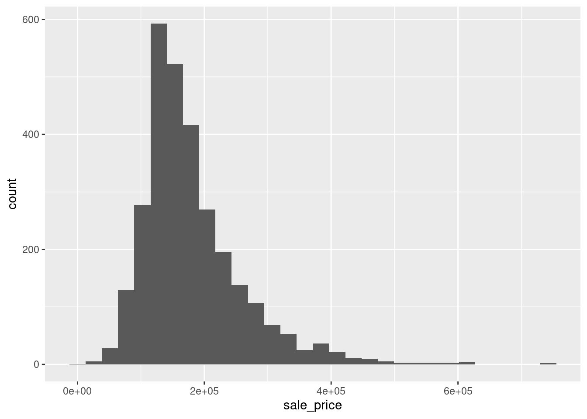
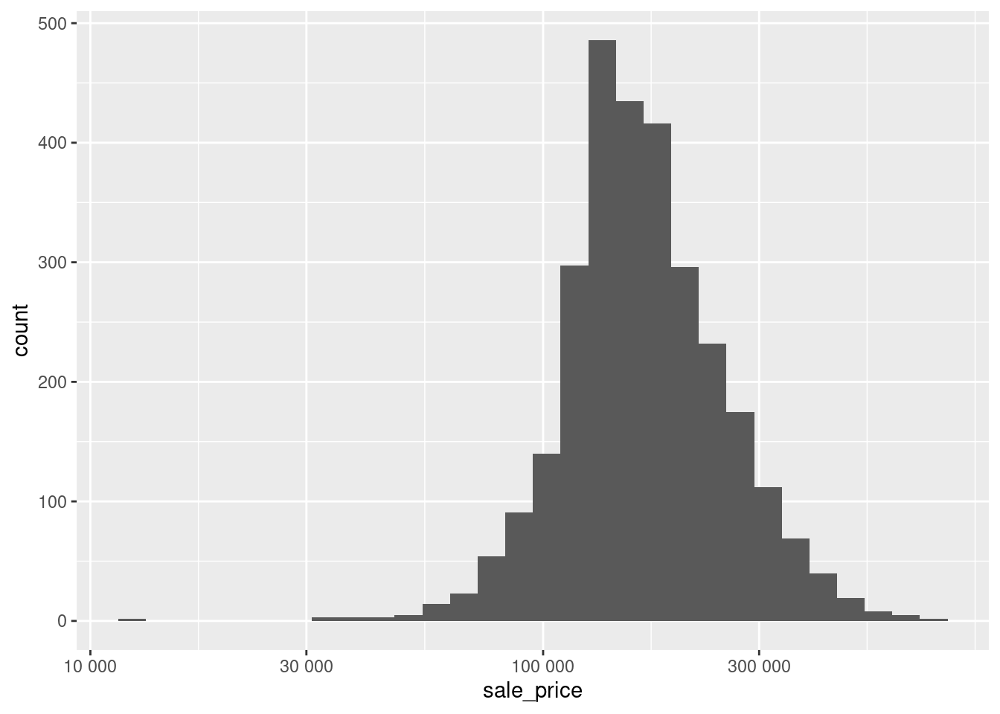
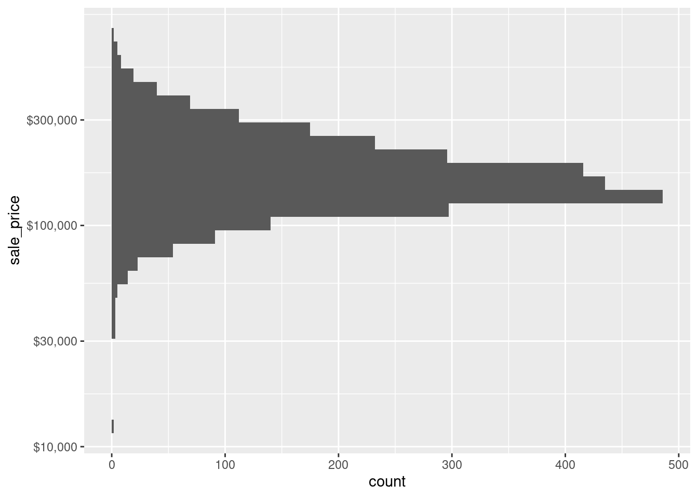

Beginning a ggplot2 Series: Logarithmize Your Scales
It is not that long ago when I first encountered ggplot2 and decided to learn how to use it1. By no means do I think that I have sufficiently mastered this package yet but as time has passed I have certainly picked up a few tips on my journey to get better at creating more meaningful visualizations. So, in order to remind myself of and share what I learned, I decided to create a sort of series containing tips that enhanced my visualization skills.
However, this is not supposed to be an intro to ggplot2 though. I have already done that and you can find it in the data exploration chapter of my “Yet Again: R + Data Science” lecture notes (see YARDS). Currently, I plan to make each installment of the series somewhat short to keep it simple and all further posts in this series will be collected under the ggplot2-tips series tag which you can also access from this blog’s main page. So, without further ado, let us begin.
Using log-transforms
Often, one finds variables in a data set that resemble heavy-tailed distributions and you can detect it by a simple histogram in a lot of cases. For instance, take a look at the variable sale_price of the ames dataset from the modeldata package. This variable contains the sale price of 2930 properties in Ames, Iowa and its histogram looks like this:
library(tidyverse)
library(modeldata)
data(ames)
# I like to clean names s.t. no capital letters are used in the variable names
ames <- ames %>% janitor::clean_names()
ames %>%
ggplot(aes(x = sale_price)) +
geom_histogram()
As you can see, the distribution looks skewed in the sense that most of the sale prices fall within one range but there are also sale prices that are comparatively high. In effect, the histogram depicts a “long tail” and the highly priced sales are not that easily discernible in the histogram as the column heights may become really small and there may be large “gaps” between columns as seen above.
One common way to deal with this is to apply a logarithm to the variable of interest. It does not really matter which logarithm you use but since we like to work in a decimal system, a logarithm with base 10 is often used. Let’s see how this changes the picture.
ames %>%
ggplot(aes(x = log(sale_price, 10))) +
geom_histogram()Admittedly, we have a gap in the histogram on the left hand side now but overall the histogram looks way less skewed. In fact, this somewhat resembles what a histogram of a normally distributed random variable could look like. This is nice because Gaussian variables are something which a lot of statistical techniques can work with best.
Thus, working with a logarithmized variable might be helpful in the long run. Note that sometimes a variable benefits from being logarithmized but also contains values that are zero. To apply the logarithm anyway, often one then offsets the variable by shifting the variable by 1.
Unfortunately, it may be nice that logarithmized variables are beneficial for statistical techniques and that the histograms are less skewed but the way we achieved that in the above example let’s the audience of the visualization somewhat clueless as to what the actual sale prices were. Sure, if in doubt, one could simply use a calculator to compute \(10^{4}\) and \(10^{6}\) to get a feeling for the range of the sale prices but of course no one will want to do that. This brings me to my next point.
Use scale_*_log10()
Honestly, I don’t know why but for a long time I have logarithmized data for visualization purposes as above because using scale_x_log10() felt somewhat frightening because I did not understand what was going on there. Take a look what happens if I add this particular layer to our initial plot instead of logarithmizing manually.
ames %>%
ggplot(aes(x = sale_price)) +
geom_histogram() +
scale_x_log10() 
Notice that the overall impression of the picture is the same as with the manually logarithmized plot. However, the x-axis is now logarithmized as opposed to being linear. So, manual logarithmization of the variable leads to just that: A transformation of the data but the axis in the plot remains linear which is why the labels on that x-axis showed values that needed to be retransformed to its original values.
In contrast, using scale_x_log10() leaves the data as it is but transforms the x-axis. In this case, this new axis is used for binning and counting to compute the histogram. Therefore, we can easily see that the majority of the sale prices lie between 100,000 and 300,000. Of course, things would be even simpler if the axis labels were not given in scientific notation. Luckily, we can easily change that.
Adjust labels using the scales package
As its name says, the scales package works really well in conjunction with the scale_* layers from ggplot2. In fact, this can make it somewhat comfortable to quickly adjust axis labels by simply passing a function (mind the ()) from the scales package to the scale_* layer’s argument labels. Here, we may simply use label_number() to get rid of the scientific notation.
ames %>%
ggplot(aes(x = sale_price)) +
geom_histogram() +
scale_x_log10(labels = scales::label_number()) Even better, scales has a lot of functions that are useful for specific units such as dollar or week, month, year (in case you are working with time data whose labels can be a special kind of pain).
ames %>%
ggplot(aes(x = sale_price)) +
geom_histogram() +
scale_x_log10(labels = scales::label_dollar()) Of course, the same thing works not only for the x-axis scale but for all kinds of other scales too. For instance, if you want to plot the same histogram but oriented vertically, you can simply change the x-aesthetic to be the y-aesthetic which means that you will need to adjust the y scale then.
ames %>%
ggplot(aes(y = sale_price)) +
geom_histogram() +
scale_y_log10(labels = scales::label_dollar()) 
In retrospect, it is really easy to adjust the axis with scale_* layers and the scales package and I really do not know why I hesitated in the past to use these functions. I guess adding another layer to the plot felt somewhat harder and slower than brute-forcing my way through the transformation. But believe me, in the long run this takes up way more of your time (especially if you want to interpret your plot later on).
I hope that you enjoyed this post and if you did, feel free to hit the applause button below. In any case, I look forward to see you in the next installment of this series.
Footnotes
Fun fact: Actually I somehow disliked R at first (to be fair I was not a frequent user of R back then anyway) but
ggplot2changed that and motivated me to do more in R.↩︎